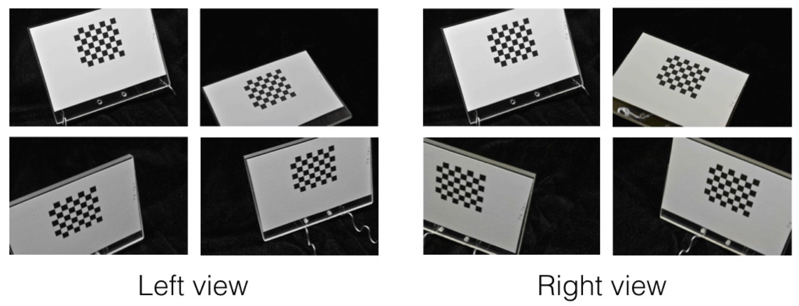

12.3 Testing accuracy using a second checkerboard
The section Calibrating stereo cameras showed how to calibrate a stereo camera setup, by photographing a checkerboard pattern at different positions and angles in the calibration volume and using the StereoMorph function calibrateCameras() to estimate the calibration coefficients and test the calibration accuracy. Recall however that by determining the calibration accuracy using the same checkerboard used in the calibration it isn't possible to test whether the calibration has the correct scaling (the checkerboard square size is identical throughout).
This section will demonstrate how to use the StereoMorph function testCalibration() to test the calibration accuracy, using a checkerboard with a different square size. This serves as a more independent test of the calibration accuracy. This section will be brief since the steps for using testCalibration() are nearly identical to those for calibrateCameras() (refer to Calibrating stereo cameras for more details on calibrateCameras()).
1. Begin by photographing a checkerboard in the calibration volume in the same manner as for the calibration step.
2. Upload the images into a folder, separating, the images from different views into two different folders (e.g. "Left" and "Right", "View 1" and "View 2") just like for the calibration step.
If you'd like to try out the following code with an example dataset you can download this test calibration image set (3 MB). This example set tests the scaling accuracy of the calibration performed in calibrating with photographs. This example set uses a checkerboard that differs both in square size (5.080 mm versus 6.35 mm) and the number of internal corners (7x6 versus 8x6). Unzip the folder and move its contents into your current R working directory.
3. Make sure the StereoMorph library is loaded.
# Load the StereoMorph package library(StereoMorph)
4. Call testCalibration().
# Test calibration against other checkerboard set test_cal <- testCalibration(img.dir='Images', cal.file='calibration.txt', corner.dir='Corners', sq.size='5.080 mm', nx=7, ny=6, error.dir='Errors', verify.dir='Verify')
The basic input parameters are nearly identical to calibrateCameras(). Here is a brief description of each parameter:
- img.dir: The folder containing the checkerboard images, each view in a separate folder.
- cal.file: The calibration file previously created by calibrateCameras().
- corner.dir: A folder where the corners will be saved. If this folder does not exist, a new folder will automatically be created.
- sq.size: The size of the squares along with the units (length along any one side).
- nx: The number of internal corners along one dimension (the choice of which is nx and ny is arbitrary but must be consistent throughout).
- ny: The number of internal corners along the other dimension.
- error.dir: A folder in which to save the error diagnostics plots. Can be omitted to just print error summary in console.
- verify.dir: (Optional) A folder where images will be saved that show the detected corners. If this folder does not exist, a new folder will automatically be created.
Just as in the calibration step, it's important to review the images in verify.dir and make sure that the corners are being returned in the same order for all of the images (the first corner is indicated by a red circle). If your cameras are arranged such that one view is upside-down relative to the other (if flip.view was TRUE for the calibration) you don't have to specify that as an input parameter. The function will detect this setting from the calibration file.
The function returns the accuracy test in the same way as the calibration step. Several error diagnostic plots are created if error.dir is specified. Additionally, the function prints an error summary in the console:
dltTestCalibration Summary
Number of aspects: 6
Number of views: 2
Square size: 5.08 mm
Number of points per aspect: 42
Aligned ideal to reconstructed (AITR) point position errors:
AITR RMS Errors (X, Y, Z): 0.0148 mm, 0.0220 mm, 0.0212 mm
Mean AITR Distance Error: 0.0309 mm
AITR Distance RMS Error: 0.0346 mm
Inter-point distance (IPD) errors:
IPD RMS Error: 0.0316 mm
IPD Mean Absolute Error: 0.0237 mm
Mean IPD error: -0.0161 mm
Adjacent-pair distance errors:
Mean adjacent-pair distance error: 0.000650 mm
Mean adjacent-pair absolute distance error: 0.0167 mm
SD of adjacent-pair distance error: 0.0188 mm
Epipolar errors:
Epipolar RMS Error: 0.304 px
Epipolar Mean Error: 0.304 px
Epipolar Max Error: 0.970 px
SD of Epipolar Error: 0.209 px
The errors in this printed summary are fairly close to those from the calibration step. One important error measure to note here is the "Mean IPD error". This is the mean error of all the inter-point distance (length measurements) among points on the checkerboard. Since this is not an absolute mean error, it should be close to zero because the error should not be biased (i.e. the calibration should not consistently under- or overestimate the lengths). Here it differs from 0.0 by 0.016 mm (16 microns). We can call this negligible since it is below the pixel resolution threshold for this setup (at least 30 microns/pixel).